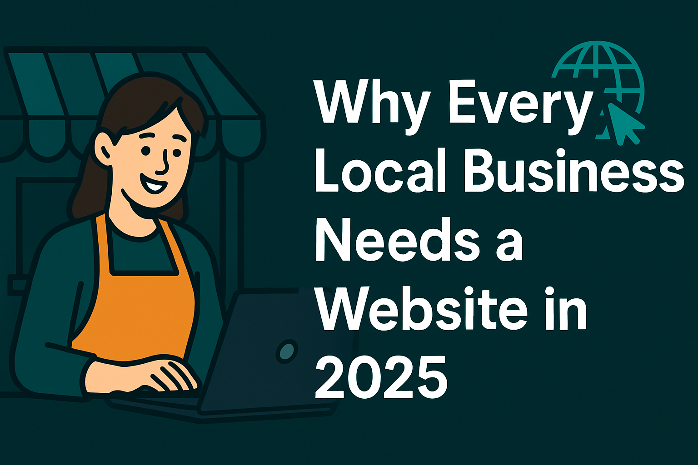
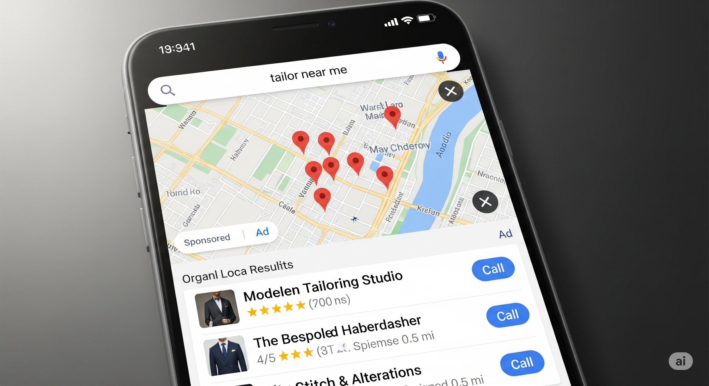
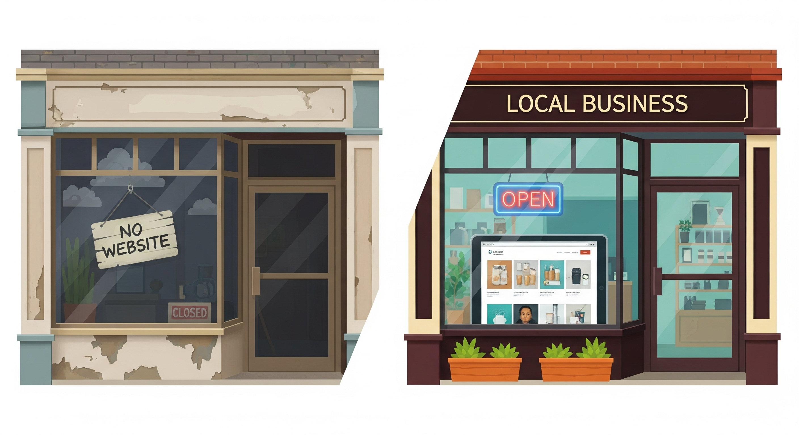
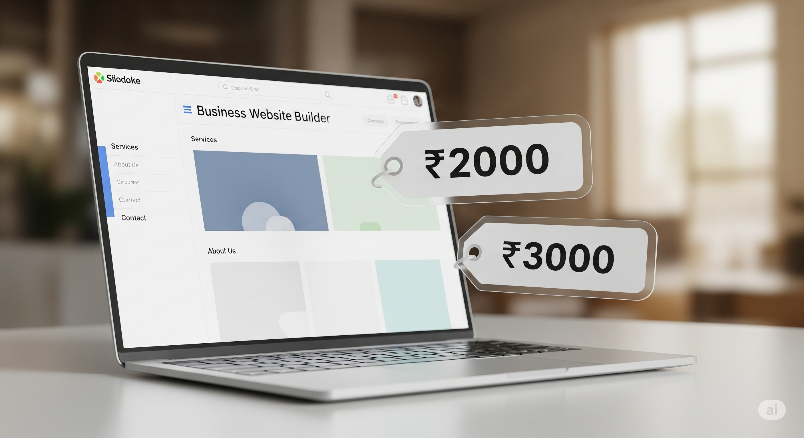
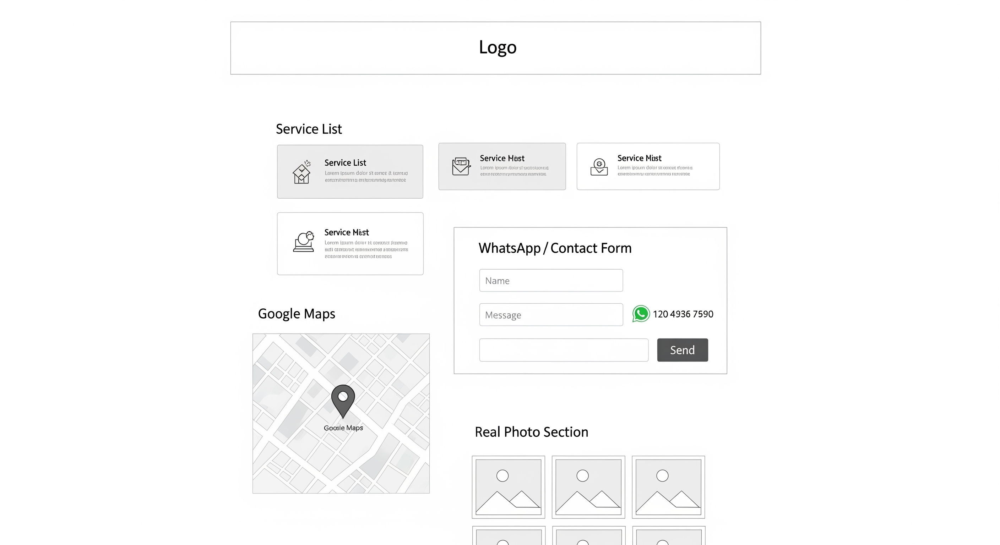

Why Every Local Business Needs a Website in 2025 (Even If You’re Active on Social Media)
If you’re running a local shop, beauty salon, repair service, or even a tuition class, you might wonder: “I’m already on Google Maps or Instagram. Why do I need a website?” It’s a common question — but here’s the truth: Your website is your digital storefront. It helps people find you on Google, builds instant trust, and brings in leads — even while you sleep. While social media is helpful, it’s not built to show up on search engines the way a website does. A basic website increases your visibility, improves your brand image, and gives your business a real online presence — something your competitors might already be doing. In 2025, not having a website means missing out on local searches, online credibility, and valuable customers who expect to find your business with just a quick Google search. Whether you're a freelancer, home-based entrepreneur, or traditional local business, a website isn’t just “nice to have” anymore — it’s a must
People Google First — Even for Local Services
In today’s world, the first instinct of most customers is to Google it — even for nearby services. In fact, 76% of people who search for a local business visit one within 24 hours. That includes searches like:
- “tailor near me”
- “best AC repair shop in [your city]”
- “home tutor nearby”
Here’s what typically happens:
- They type in a search
- A list of businesses shows up
- They click on the one with a proper website, real photos, and clear contact details
- You get the call
But if your business doesn’t have a website — or it doesn’t show up on Google — you’re already out of the
running.
A basic website with your services, location, contact info, and even Google Maps can make sure you appear in
local search results.
And when combined with simple SEO techniques (like using the right page titles and service-related keywords),
your visibility goes up even further.
Don’t Just Rely on Social Media
Instagram, Facebook, or WhatsApp Business are great for building visibility and engaging with customers. But relying only on these platforms is like renting space — your reach, design, and visibility are limited by their rules.
On the other hand, a website is your digital home, where you control the content, appearance, and how customers interact with your brand.
Here’s a quick comparison:
| Feature | Social Media | Your Website |
|---|---|---|
| Platform Control | Owned by Meta or others | Fully owned by you |
| Google Visibility | Very low SEO impact | High SEO potential |
| Info Flexibility | Limited formatting, no custom pages | Full control over layout and content |
| User Distractions | Competing posts, ads, messages | Clean, focused on your business |
| Brand Credibility | Moderate trust | Strong trust and professionalism |
Many local businesses think a Facebook page or an Instagram profile is enough — but these platforms don’t rank well on Google, and they aren’t designed for things like service menus, directions, or testimonials in a structured way.
Real Example: A salon with only an Instagram page often gets missed when someone searches “salon near me” — but the one with a simple 1-page website usually shows up.
Pro Tip: Use social media to drive traffic to your website — not the other way around.
A Website Is Affordable and Powerful

One of the biggest myths we hear from local business owners is:
“A website will cost me ₹20,000 or more!”
That may have been true years ago — but not anymore.
Today, a fully functional small business website in India can cost as little as
₹2,000–₹3,000 per year (including domain name, hosting, and a basic design).
For that small investment, your website can:
- Appear on Google when people search for your services
- Be listed on Google Maps with directions
- Showcase your services, menu, or pricing
- Collect inquiries via a contact or booking form
- Display reviews and testimonials from happy customers
- Provide your contact details and working hours
Pro Tip: You don’t need a big, fancy site. A clean, one-page website is often enough to:
- ✔️ Rank locally
- ✔️ Convert visitors into customers
- ✔️ Look 10x more professional than just a social media page
This kind of site is perfect for businesses like:
- Tailors
- Tuition classes
- Salons
- Cafes
- Gyms
- Electricians
- Local traders
SEO Insight: A simple site with relevant keywords (like “affordable mehndi artist in Pune” or “tiffin service near me”) can easily outrank inactive or social-only competitors.
In short: Your website works as a 24/7 salesperson — without costing a fortune.
It Builds Instant Trust

Let’s be real: before trying out a new salon, tuition class, tailor, or any service —
you probably Google them first, right?
So do your customers.
If they find a clean, simple, and informative website, you instantly earn their trust.
If they don’t find anything at all? They move on to the next option.
A good local business website builds credibility by including:
- ✅ Your Name and Services – Tell people exactly what you do. Whether you’re a mehndi artist, car mechanic, yoga instructor, or baker — say it clearly.
- ✅ Real Photos of Your Work or Store – Actual images (not stock photos) show professionalism and authenticity.
- ✅ Google Maps Integration – Let people easily find your shop or office with directions built in.
- ✅ Customer Reviews and Testimonials – Positive feedback builds confidence. Even 3–4 reviews can make a big difference.
- ✅ Working Hours and Contact Info – Avoid missed opportunities. Make it easy for people to reach out.
A 2024 study shows that 84% of people trust a business more if it has a
website.
Even a basic one-page site can make your business look more professional than competitors without a site.
It Works 24/7 for You

You’re busy running your shop, attending clients, or managing orders — but your website never stops working.
While you’re resting, off-duty, or closed on Sundays, your website is still:
- ✅ Displaying your services – Whether someone visits at 2 PM or 2 AM, they can clearly see what you offer.
- ✅ Collecting new leads – With a simple contact or inquiry form, potential customers can reach out anytime.
- ✅ Answering common questions – “Are you open today?”, “Where’s your location?”, “Do you offer home delivery?” — a website answers all of this.
- ✅ Building trust – It shows you’re a real, established business. Visitors feel confident contacting you.
- ✅ Sharing updates – Holiday closures, new offers, changes in timing — all can be added easily.
It’s like having a digital marketing assistant who works 24/7, never takes a break, and never asks for a salary.
“Your business sleeps. Your website doesn’t.”
You Can Start Simple — and Still Win
You don’t need a fancy, multi-page website to get started. A simple, one-page website for your small business can still attract customers, rank locally, and build trust.
Here’s what your homepage should include:
- ✅ Your business name & tagline – Let people know who you are and what you do within seconds.
- ✅ Services or products offered – A short, clear list that answers, “Do they offer what I need?”
- ✅ Contact form or WhatsApp link – Make it easy for people to reach you with a single click.
- ✅ Real photos of your work, shop, or team – Builds instant credibility and shows you’re legit.
- ✅ Google Maps directions & address – Help people find you quickly, especially on mobile.
These elements are the must-haves for a small business website and can all fit on one clean, scrollable page.
Once your business grows, you can always expand with:
- – FAQs to handle common questions
- – Booking or appointment system
- – Photo galleries or product showcases
- – Detailed testimonials or client stories
“Your website can grow with your business — but it needs to exist to begin with.”
FAQs
1. I already have an Instagram page — do I still need a website?
Yes. Social media is great for engagement, but it doesn't show up well on Google. A website makes your business searchable, professional, and credible — especially to new customers.
2. What kind of website does a small business need?
You don’t need anything fancy. A simple 1-page website with your services, photos, contact info, and a map is enough to get started and show up in local searches.
3. How much does it cost to build a small business website?
A basic website can be built for as low as ₹2,000–₹3,000/year, including domain, hosting, and design. It’s one of the most affordable marketing tools you can invest in.
4. Can I update my website myself later?
Yes. If your site is built on platforms like WordPress or Webflow, you can easily edit text, photos, and updates without needing technical skills.
5. Will having a website help me get more customers?
Absolutely. Most customers Google a service before they buy. A well-made website builds trust and makes you more discoverable — bringing in more calls, visits, or inquiries.
Final Thoughts
Your website is more than just a page — it’s your digital handshake with potential customers.In many cases, it’s the first impression people get of your local business. And in 2025, not having a website could cost you trust, visibility, and real sales.
The good news? You don’t need a big budget or tech skills to get started. Even a simple, one-page business website can help you:
- ✅ Show up on Google
- ✅ Earn trust instantly
- ✅ Attract new local customers
Don’t wait for competitors to outrank you.
Take the first step — your future customers are already searching for you online.